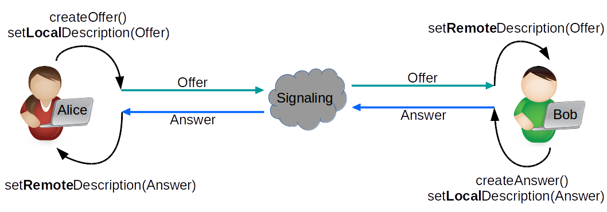

Signaling
When a WebRTC Agent starts it has no idea who it is going to communicate with and what they are going to communicate about. Signaling is used to bootstrap the call so that two WebRTC agents can start communicating.
Signaling messages are just text. The WebRTC agents don’t care how they are transported. They are commonly shared via Websockets, but that is not a requirement.
1. How does WebRTC signaling work?
WebRTC uses an existing protocol called the Session Description Protocol. Via this protocol, the two WebRTC Agents will share all the state required to establish a connection.
2. What is the Session Description Protocol (SDP)
The SDP is a key/value protocol wiht a newline after each value. A SDP contains zero or more Media Descriptions.
A Media Description usually maps to a single stream of media. So if you wanted to describe a call with three video streams and two audio tracks you would have five Media Descriptions.
2.2. How to read the SDP
Every line in a SDP will start with a single character, this is your key.
The SDP defines all they keys that are valid. You can ONLY use letters for keys as defined in the protocol.
Eg:
1 2 | |
SDP keys is using in WebRTC:
vversion, should be equal to0oorigin, contains a unique ID useful for renegotiationsssession name, should be equal to-ttiming, should be equal to0 0mmedia description (m=<media> <port> <proto> <fmt> ...)aattribute, a free text fieldcconnection data, shoudl be equal toIN IP4 0.0.0.0
Media Descriptions in SDP:
A Media Description definition contains list of formats. These formats map to RTP Payload Types.
The actual codec is then defined by an Attribute with the value rtpmap in the Media Description.
Eg:
1 2 3 4 5 6 7 8 9 | |
In the above example, we have 2 Media Descriptions:
- Audio format in port
4000, protoRTP/AVP, fmt111. The attribute maps the Payload Type111toOpus - Video format in port
4002, protoRTP/AVP, fmt96. The attribute maps the Payload Type96toVP8
Note: In the above example v, o, s, c, t are defined, but they do not affect the WebRTC session.
3. How SDP and WebRTC work together
3.1 What are offers and answers
WebRTC uses an offer/answer model. All this means is that one WebRTC Agent makes an “Offer” to start a call, and the other WebRTC Agents “Answers” if it is willing to accept what has been offered.
This gives the answerer a chance to reject unsupported codecs in the Media Descriptions. This is how two peers can understand what formats they are willing to exchange.

3.2 Transceivers are for sending and receiving
Transceivers is a WebRTC specific concept that you will see in the API. What it is doing is exposing the “Media Description” to the JavaScript API. Each Media Description becomes a Transceiver. Every time you create a Transceiver a new Media Description is added to the local Session Description.
Each Media Description in WebRTC will have a direction attribute. There are four valid values:
sendrecvsendrecvinactive
3.3 SDP Values used by WebRTC
group:BUNDLE
Bundling is an act of running multiple types of traffic over one connection. Some WebRTC implementations use a dedicated connection per media stream. Bundling should be preferred.
fingerprint:sha-256
This is a hash of the certificate a peer is using for DTLS. After the DTLS handshake is completed, you compare this to the actual certificate to confirm you are communicating with whom you expect.
setup:
This controls the DTLS Agent behavior. This determines if it runs as a client or server after ICE has connected. The possible values are:
setup:active- Run as DTLS Clientsetup:passive- Run as DTLS Serversetup:actpass- Ask the other WebRTC Agent to choose
ice-ufrag
This is the user fragment value for the ICE Agent. Used for the authentication of ICE Traffic.
ice-pwd
This is the password for the ICE Agent. Used for authentication of ICE Traffic.
rtpmap
This value is used to map a specific codec to an RTP Payload Type.
fmtp
Defines additional values for one Payload Type. This is useful to communicate a specific video profile or encoder setting.
candidate
This is an ICE Candidate that comes from the ICE Agent. This is one possible address that the WebRTC Agent is available on
ssrc
A Synchronization Source (SSRC) defines a single media stream track.
label is the ID for this individual stream. mslabel is the ID for a container that can have multiple streams inside it.
3.4 Example of a WebRTC Session Description
1 2 3 4 5 6 7 8 9 10 11 12 13 14 15 16 17 18 19 20 21 22 23 24 25 26 27 28 29 30 31 32 33 34 35 36 37 38 39 40 41 42 | |
This is what we know from the above message:
- We have two media sections, one audio and one video.
- Both of them are sendrecv transceivers. We are getting two streams, and we can send two back.
- We have ICE Candidates and Authentication details, so we can attempt to connect.
- We have a certificate fingerprint, so we can have a secure call.